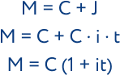
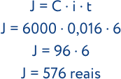
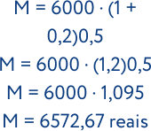

.png)
MATEMÁTICA FINANCEIRA
A matemática financeira é a área da matemática que estuda a equivalência de capitais no tempo, ou seja, como se comporta o valor do dinheiro no decorrer do tempo. E, como exemplos dessas operações, podemos citar as aplicações financeiras, empréstimos, renegociação de dívidas, ou mesmo, tarefas simples, como calcular o valor de desconto num determinado pro- duto.

FÓRMULA
Capital (C)
Representa o valor do dinheiro no momento atual. Este valor pode ser de um investimento, dívida ou empréstimo.
Juros (J)
Representam os valores obtidos pela remuneração de um capital. Os juros representam, por exemplo, o custo do dinheiro tomado emprestado. Ele pode também ser obtido pelo retorno de uma aplicação ou ainda pela diferença entre o valor à vista e a prazo em uma transação comercial.
Montante (M):
Corresponde ao valor futuro, ou seja, é o capital mais os juros acrescidos ao valor. Assim, M= C+J
Taxa de juros (i)
É o percentual do custo ou remuneração paga pelo uso do dinheiro. A taxa de juros está sempre associada a um certo prazo, que pode ser, por exemplo, ao dia, ao mês ou ao ano.
A ideia por trás do juros simples também é similar à ideia do acréscimo, a diferença entre eles é dada pelo período em que são calculados. Enquanto a taxa do acréscimo é aplicada uma vez, a do juros simples é calculada em um intervalo de tempo. Podemos calcular o juros simples de determinado capital C, aplicado à determinada taxa a regime de juros simples (i), em um determinado período de tempo t, pela fórmula:
O valor pago ao final dessa aplicação deve ser dado pelo dinheiro aplicado mais o valor do juros e recebe o nome de montante (M). O montante é dado pela expressão:
A única preocupação que devemos ter em relação a problemas envolvendo juros simples é com as unidades de medida de taxa e tempo, elas devem sempre estar em unidades iguais.
Exemplo
Marta deseja aplicar R$ 6000 em uma empresa que promete gerar lucros de 20% ao ano sob regime de
juros
simples. O contrato feito por Marta afirma que ela só pode tirar o dinheiro após seis meses,
determine
qual foi o rendimento de seu dinheiro no final desse período.
Observando o enunciado, veja que o capital é igual a 6000, logo, temos que C = 6000. A taxa de juros
é
de 20% ao ano, e o dinheiro ficará aplicado durante seis meses. Observe que a taxa foi dada ao ano,
e a
do tempo, em meses, e sabemos que a unidade de medida de ambas devem ser a mesma. Vamos encontrar o
valor mensal da taxa, veja:
Sabemos que a taxa é de 20% ao ano, como um ano tem 12 meses, logo, a taxa mensal será de:
Substituindo esses dados na fórmula, temos que:
Portanto, o valor a ser retirado no fim dos seis meses é de 576 reais, e o montante é de:
JUROS COMPOSTOS
No juros simples, o valor da taxa de juros é sempre calculado em cima do capital inicial, a diferença entre esses dois sistemas (juros simples e compostos) está justamente nesse ponto, ou seja, na forma como a taxa é calculada. No juros composto, a taxa de juros é sempre calculada em cima do capital do mês anterior, isso faz com que o juros aumente de maneira exponencial seu valor. A fórmula para calcular-se o juros no sistema de amortização de juros compostos é dada por:
Em que M é o montante acumulado, C é o valor do capital inicial, i é a taxa de juros dada em porcentagem, e t é o período no qual o capital ficou aplicado no sistema. Da mesma forma que no juros simples, no sistema de juros compostos, a taxa e o tempo devem ficar na mesma unidade.
Exemplo
Calcule o valor do montante que Marta recolheria no final dos seis meses ao aplicar seus 6000 reais
sob taxa de juros de 20% ao ano no regime de juros compostos.
(Dado: 1,20,5 ≈ 1,095)
Observe que os dados são os mesmos do exemplo 4, logo, temos que:
Substituindo os dados na fórmula de juros compostos, temos que:
Portanto, o montante a ser retirado por Marta no sistema de juros simples é de 6572, 67 reais. Veja que o montante no sistema de juros compostos é maior que no de juros simples, e isso ocorre em todos os casos.
Para melhorar seus estudos...
Matemática pode ser um conteúdo difícil. Para aumentar seu aprendizado, acesse ao mapa mental e a playlist de vídeo aulas sobre este assunto:
Mapa mental playlist de videoaulas